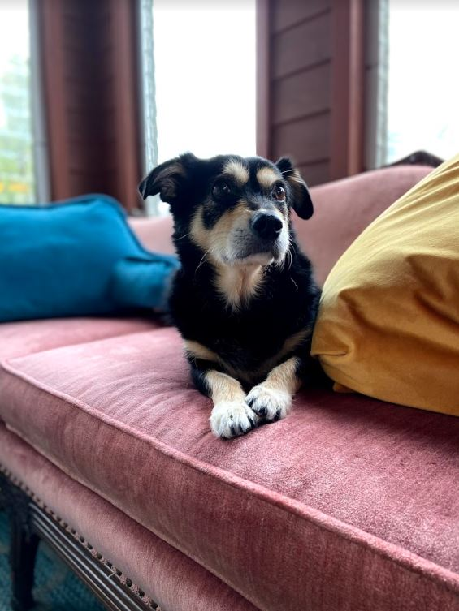

Hello!
My name is Raquel Román-Rodriguez [raˈkɛl roˈmãn roðɾiˈɣes], and I am studying to become a software engineer.
I am using this page to explore and document my journey as I learn to code.
In 2018, I completed a Master of Music degree in Vocal Performance at the Cleveland Institute of Music. I have been singing professionally, teaching voice, and conducting choral ensembles at the collegiate level ever since. However, in the wake of the Coronavirus pandemic, I have begun to rethink my career path.
My dad and my husband are both programmers, and I have always found code facinating, so here I am!
My Dogs
Sombra
This is my dog, Sombra. She is a 9-year-old, mini-dachschund-chihuahua mix. She is 7 pounds of pathetic baby. Her favorite things are snuggling under the covers, being picked up, and bananas. She hates the wind and the fact that other dogs would dare exist.

Luna
This is my other dog, Luna. She is some kind of corgi-mix and she is 11-years-old. She loves mealtimes, chewing on toys, and chasings squirrels. She is missing her right-lower canine tooth, so her tongue hangs out all the time. She hates that it isn't time for dinner yet.
Hear Me Sing
Te Quiero, Dijiste (Muñequita Linda) & Júrame by María Grever
This performance is from my Master's recital in 2018. My friend and collaborator, Maria Parrini, is the pianist.
As a singer, I have a particular interest in Latin American Art Song. In the Western Classical world, Latin American music has historically
been excluded and overlooked, despite its artistic merits. I plan to continue my work in performing, researching, and uplifting this incredible
music throughout my life.
These two pieces are both written by María Grever, a Mexican composer. Many of Grever's works were featured in films during
the Golden Age of Film in Mexico in the 1930s. She wrote over 1000 works of song and her works reached international acclaim during her life,.
The first piece, Te Quiero, Dijiste (Muñequita Linda), is a famous example
of a bolero, a type of Latin American romantic song that originated from the trova style in Cuba in the late 19th-century.
It is also my abuelo's favorite song of all time and performing it was a special experience for me.
The second piece, Júrame, is one of Grever's most celebrated works of all time. The singer is passionately pleading with their lover
to swear to them that their love is true.
Contact Me
Some text
Follow Me